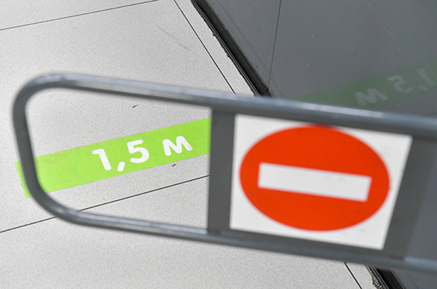
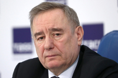
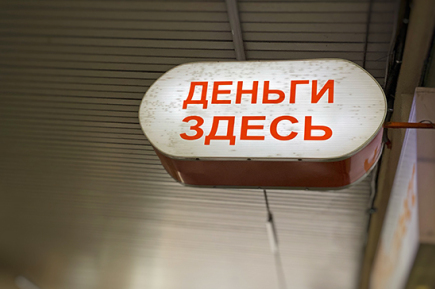

В Роспотребнадзоре заявили о необходимости соблюдения социальной дистанции

Фото: АГН Москва
Коронавирус может находиться на коже и одежде инфицированного человека, поэтому социальную дистанцию необходимо соблюдать, даже если окружающие носят маски, заявили в Роспотребнадзоре.Об этом в среду сообщает сайт стопкоронавирус.рф.
«Соблюдать дистанцию необходимо, даже если окружающие носят маски, поскольку вирус может находиться на коже инфицированного человека и его одежде, откуда попадает на контактные поверхности и в воздух», — говорится в сообщении ведомства.
Также в Роспотребнадзоре уточнили, что минимальная социальная дистанция между людьми должна составлять 1,5 метра, соблюдать её нужно везде, в том числе в магазинах, аптеках, в медицинских организациях и на улице.
Во время бега людям следует соблюдать большую социальную дистанцию, чем во время ходьбы.«Расстояние, на которое распространяется аэрозоль от человека, зависит от размера образующихся частиц, скорости воздушного потока, положения человека в пространстве, ветра.Во время бега требуется соблюдение большей дистанции, чем во время ходьбы.Это обусловлено более активным дыханием и быстрым передвижением человека», — пояснили в Роспотребнадзоре.
В ведомстве сообщили, что ограничительные мероприятия в стране будут сниматься постепенно, в том числе и требования по соблюдению социальной дистанции, это правило не останется навсегда.
Всемирная организация здравоохранения 11 марта объявила вспышку COVID-19 пандемией.В России, по последним данным, выявлено за сутки 10 559 новых случаев коронавируса, а общее число заражений достигло 165 929.Россия заняла пятое место в мире по числу подтверждённых случаев COVID-19, сместив с него Германию.
Об оперативных мерах, которые принимают законодатели для борьбы с пандемией COVID-19, читайте в специальном разделе на сайте Госдумы.


Content Date: n/a
Download Date: 2021-05-13
Document ID: L0C04BZY1